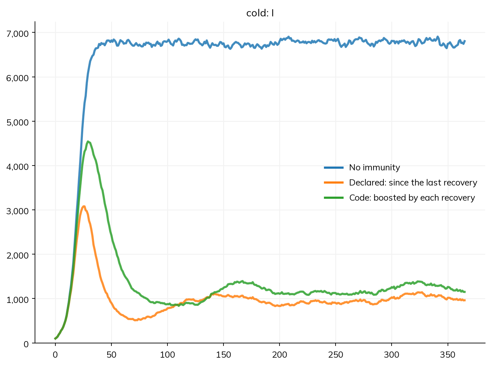
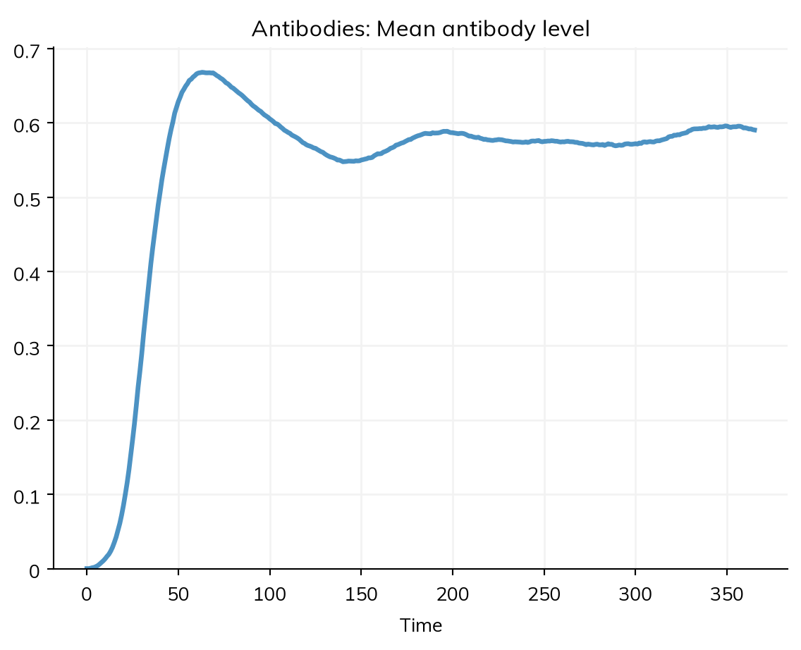

import numpy as np
import starsim as ss
S, I = ss.states('S I')
infection = S >> I @ 0.4*I # β = 0.4 per day
recovery = I >> S @ ss.days(7) # Infectious for 7 days on average
cold = ss.Disease(infection, recovery, init_prev=0.01)Custom modules
Most of a Starsim model is declared, but some parts are easier to say as code: a quantity that each person carries and that changes continuously (an antibody level, a CD4 count), a rule of behavior of your own, or a result worked out in a way of your own. A module written as code is a Python class with a step() method, which Starsim calls once each step. It can read and change the rest of the sim, and sits in the same sim as declared diseases. T8 – Custom modules builds modules up a step at a time.
Before writing code
Many things that once needed a module of their own are declared, and a declared part has two advantages: it runs under every solver (as an ODE, as a stochastic compartmental model, or as agents), and describe(), diagram(), and equations() show it. So before writing a module, check whether one of these does the job:
| To model | Declare it with | See |
|---|---|---|
| A disease that moves people between states | ss.Disease() with states and transitions |
Diseases |
| Vaccination, testing, or treatment | ss.vaccinate(), ss.screen(), ss.treat() |
Products |
| Protection that wanes | ss.vaccinate(efficacy=0.9, waning=ss.years(5), ...), or a state people leave (R >> S @ ss.years(5)) |
Products |
| Contact tracing | a delivery with trace= |
Products |
| A change to a parameter for some people or some time (masks, school closures) | ss.modify() |
Interventions |
| One disease changing the risk of another | ss.modify(sti.rel_sus, multiply=3, who=hiv.I) |
Connectors |
| A number to report, such as cases from infections | ss.outcome() |
Outcomes |
| A value for each person, drawn or recorded at an event, or a trait (a CD4 count at infection, each person’s infectiousness) | ss.attr(), e.g. ss.attr(ss.normal(500, 50), when=infection) |
ss.attr |
| A move as soon as a condition holds, or when an event happens to the person (debut at 15, a change at diagnosis) | A trigger, ss.on() |
Diseases |
| Moving people between groups, such as vaccination or a change of risk | ss.transfer() |
Stratification |
| Protection that depends on the time since an event, such as immunity that halves every 60 days after recovery | ss.modify(cold.rel_sus, multiply=1 - 0.5**(cold.recovery.since/ss.days(60))) |
The example below |
| Counting events in each person, such as past infections or doses | increment= on a transition |
Stratification |
Write a module as code when the model needs something none of these can say. A module that keeps a value for each person, like the one below, makes the sim run as agents (n_agents= says how many). A class can also say so itself: compartmental = False says that it needs agents, and compartmental = True that its code works on groups too (Modules). A module that keeps nothing per person, such as an ODE of its own, runs with no agents; Measles in London works through an example.
An example: immunity that builds up
For many respiratory infections, protection depends on past infections: antibodies rise with each one and decline in between. Protection that depends only on the time since the last recovery can be declared (the table above), but a level boosted by every infection is a per-person quantity, which is what code is for. Here is the infection, a generic cold with no immunity of its own (an SIS model, R0 = 0.4 × 7 = 2.8):
The module holds each person’s antibody level, which rises by boost at each recovery, up to 1, and halves every half_life:
class Antibodies(ss.Module):
""" Each person's antibody level: boosted by each recovery, up to 1, and halving every half_life in between """
def __init__(self, **kwargs):
super().__init__()
self.define_pars(
half_life = ss.days(60), # How quickly antibodies decline
boost = 0.5, # The rise in the level at each recovery
)
self.update_pars(**kwargs)
self.define_states(
ss.FloatArr('level', default=0.0, label='Antibody level'),
)
return
def init_results(self):
super().init_results()
self.define_results(
ss.Result('mean_level', label='Mean antibody level', kind='ratio'),
)
return
def step(self):
decay = 0.5**(self.t.dt/self.pars.half_life) # The fraction left after one step
self.level[:] = self.level*decay
recovered = self.sim.diseases.cold.recovery.uids # Those who recovered in the last step
self.level[recovered] = np.minimum(1.0, self.level[recovered] + self.pars.boost)
return
def record_states(self):
super().record_states()
self.results.mean_level[self.ti] = self.level.mean() # The level at the start of the step
returnThe module keeps the level, and a modifier says what it does: it multiplies each person’s susceptibility by what the antibodies leave of it. A modifier never overwrites the quantity it changes, and describe() lists it as part of the model. Here the infection is run with no immunity, with protection declared from the time since the last recovery, and with the antibodies:
def susceptibility(sim):
""" Each person's susceptibility: 1 minus their antibody level """
return 1 - sim.custom.antibodies.level
by_recovery = ss.modify(cold.rel_sus, multiply=1 - 0.5**(cold.recovery.since/ss.days(60))) # Halves every 60 days since the last recovery
coded = ss.modify(cold.rel_sus, multiply=susceptibility)
pars = dict(n_agents=10_000, stop=ss.days(365), verbose=0)
sims = {
'No immunity': ss.Sim(cold, **pars),
'Declared: since the last recovery': ss.Sim(cold, connectors=by_recovery, **pars),
'Code: boosted by each recovery': ss.Sim(cold, Antibodies(), connectors=coded, **pars),
}
msim = ss.parallel(sims)
msim.plot('cold_I')
ss.parallel() runs the sims in place, so each one has its results, and the module’s are under its name:
sims['Code: boosted by each recovery'].results.antibodies.mean_level.plot()
Choosing a base class
A module subclasses one of Starsim’s module types, so that it runs at the right point in each step and ends up in the right place in the sim:
| Base class | Use for | Given to the sim as |
|---|---|---|
ss.Module |
Anything that doesn’t fit the others, like the antibodies above | modules= (or as a positional argument) |
ss.Disease |
A disease: declared, written as code, or both (see Diseases) | diseases= |
ss.AgentDisease |
A disease whose transmission between agents is written as code | diseases= |
ss.Network |
Who has contact with whom | networks= |
ss.Demographics |
Births, deaths, and migration | demographics= |
ss.Intervention |
Actions that change the course of the epidemic | interventions= |
ss.Analyzer |
Recording results without changing anything | analyzers= |
ss.Connector |
Links between modules, such as interactions between diseases | connectors= |
The sim keeps each kind in its own list, e.g. sim.custom.antibodies and sim.interventions[0]. A module is named after its class in lower case (antibodies), unless it is given name=. To give a module of your own to a sim by name, as a string (diseases='mydisease'), as Starsim’s own can be, register the Python module it is in with ss.register_modules(my_package) (ss.register_modules).
The parts of a module
Parameters
In __init__(), call super().__init__() first, with no arguments; then give the parameters and their defaults with define_pars(); then apply the values given with update_pars(), as above. The values are checked against the defaults, so a misspelled name is an error:
try:
Antibodies(half_lfe=ss.days(90))
except Exception as e:
print(type(e).__name__, e)ValueError 1 unrecognized argument for antibodies: half_lfeThe parameters are in self.pars. Give rates and durations as Starsim’s time parameters (e.g. ss.days(60)), so that they mean the same whatever the step: self.t.dt/self.pars.half_life is a number of half-lives per step, whether the step is a day or a week. For a default that is a distribution, a number sets its main value (ssl.AgentSIR(p_death=0.02)), and another distribution of the same kind replaces it. A parameter of a distribution can itself be a function of the sim and the people (Distributions).
States
A state of a module is an array with one value for each agent. Give the module’s states with define_states(), as ss.FloatArr (numbers), ss.BoolState (true or false), or ss.IntArr (whole numbers). (ss.State is different: it is a state of a declared disease.)
self.define_states(
ss.FloatArr('level', default=0.0, label='Antibody level'),
ss.BoolState('vaccinated', label='Vaccinated'),
)Each state becomes an attribute of the module (self.level) and is added to the people (sim.people.antibodies.level). States grow as agents are born, and a dead agent’s values are kept but left out of sums and means, so keep every value that belongs to a person in a state, not in a NumPy array of your own. Each ss.BoolState also gives a result of the same name, the number of people for whom it is true. Array indexing covers reading and writing states, the kinds of array, and states with several columns. A state that most agents never change from its default can be made with shared=True, so that it takes no memory per agent until a value is set.
A property of each person that several modules read, rather than a state of one module (e.g. a social determinant of health that two conditions depend on), is added to the people themselves, from init_pre(), with sim.people.add_state(ss.BoolArr('housing', default=ss.bernoulli(0.2))). Adding one that is there already returns it, so each module that reads it can add it. A declared rate reads it as ss.person.housing, or as ss.person.get('housing', 0) to have a value when no module adds it.
Code reads the same names a declaration does: a condition or an event’s memory of a running sim, indexed by UID, gives its values, e.g. preg.since_birth[uids] (the time since each woman’s last live birth) or (hiv.I & preg.P)[uids], and .values gives them for everyone alive. A declared transition’s current rate for some agents, with its modifiers, is dis.death.hazard(uids).
define_aliases() gives a name that stands for another state (infectious='infected') or for a function of the module (asymptomatic=lambda self: self.infected & ~self.symptomatic, read-only, with a result of its count); an alias is used only where the module has no attribute of that name, so a subclass can replace it with a state. overwrite=True on define_states() replaces an inherited state or alias, and reset= removes one.
Results
To report a result of your own, override init_results() and give it with define_results(), as above. kind= says how it is summed over time, compared with data, and scaled when the population is rescaled: 'flow' for a number of events in each step, 'stock' for a quantity at each time point, and 'ratio' for a fraction or a mean, which isn’t scaled (Results). Fill results at self.ti: a stock in record_states(), so that it is the state at the time point, and a flow in record_events(), after every module has stepped (or in step(), as the events happen, e.g. self.results.doses[self.ti] += len(uids)). A result that needs both, such as births over the people alive, goes in record_events(), reading the stock from its result (self.sim.results.alive[self.ti]), or in finalize_results(), over the whole run at once (why).
The work of each step
step() is called once each step, and is where the module does its job. Inside it:
self.simis the whole sim: its people (self.sim.people), diseases (self.sim.diseases.cold), and so on. A plainss.Modulegiven asmodules=is inself.sim.custom(sim.modulesis every module of the sim, of every kind).self.parsare the module’s parameters. A time parameter stays one (self.pars.half_life), as above. A value that varies, in time (ss.timeseries,ss.seasonal) or by level (ss.by()), is its value now in arithmetic (self.pars.emergence*n), with its unit if typed, soself.pars.rate.to_prob()works for a time series of rates too. So is a parameter of a declared disease, with what modifies it applied.self.t.dtis the length of a step,self.nowis the date or time of the step (the time point it starts from), andself.tiis the index of that time point, where the step’s results are recorded. The first step isself.ti == 0. A stock recorded atself.tiis already there (e.g.self.sim.results.cold.I[self.ti], the number infectious now), but this step’s flows are not, so[self.ti - 1]of a flow is the last step’s.- A transition of a declared disease says who went through it:
disease.recovery.uidsis the agents who recovered in the last step.disease.recovery.ever,.n_times, and.sincesay whether, how often, and how long ago each person did; a disease keeps this only for the transitions the model reads, so to read one after the run, givekeep_times=Trueto the sim. - To move people between the states of a declared disease, use
ss.move():ss.move(sir.I, sir.R, p=0.5)cures half of those infectious,ss.move(sir.S, sir.I, n=5)makes five people infectious,ss.move(sir.S, sir.R, p=0.8, who=ss.person.age < 5)takes a condition, andsir.move(uids, sir.R)moves particular agents. It runs under every solver; the number in a state of people is read, not set, but a count that is not people can be set (W.n = 0) or moved from outside (ss.move(ss.dead, mosq.Sv, n=1000)).
A module written as code that is not a disease runs before the diseases in each step, so what it does (protecting someone, say) applies to the transmission in the same step. From declaration to run lists the full order.
Two habits keep a module’s results from depending on the length of the step (Solvers): draw competing exits from a state together (one exit at the total rate, then which one it was), rather than one after the other; and give those who arrive in a state during a step only half a step’s chance of leaving it, as a declared disease does as agents (how). sim.check_dt() shows both biases.
For anything random, give the module a distribution in __init__() (e.g. self.p_isolate = ss.bernoulli(p=0.5)) and draw from it in step() (self.p_isolate.filter(uids)), rather than calling NumPy’s random numbers. Each distribution then has its own stream of random numbers, so the module’s draws don’t change when the rest of the model does, and comparisons between scenarios stay free of noise from the random numbers: see Random numbers.
When each method is called
When a sim is built and run, each module goes through these stages:
__init__(): the module is made; its parameters and states are given.init_pre(sim): called once when the sim is built. It links the module to the sim and the people, sets up its time steps, and callsinit_results(). Override it rarely.init_post(): called once the people exist and their states have their initial values; for setup that needs them.record_states(): called at the start of each step, before any module has stepped, to record the state then.step(): called once each step.record_events(): called at the end of each step, after every module has stepped, to record what happened in it.finalize()andfinalize_results(): called once at the end of the run, e.g. to work out a result from others.
Modules from functions
For a quick piece of logic, a function of the sim is enough: it becomes the module’s step(), called once each step. A function given as interventions= becomes an ss.Intervention, one given as analyzers= an ss.Analyzer, and one given as modules= an ss.Module, named after the function. A common use is a check while a model is being built, such as that everyone is in one state of a disease at each step (the “Explicit” tab makes the analyzer from the function itself, with ss.Analyzer.from_func()):
S, I, R = ss.states('S I R')
infection = S >> I @ 1.9*I # β = 1.9 per day
recovery = I >> R @ ss.days(8) # Infectious for 8 days on average
measles = ss.Disease(infection, recovery, init_prev=0.001)
def check_states(sim):
""" Check that everyone alive is in exactly one state of measles """
m = sim.diseases.measles
in_states = m.S.sum() + m.I.sum() + m.R.sum()
assert in_states == sim.people.alive.count(), f'{in_states} agents in states, but {sim.people.alive.count()} alive'
return
sim = ss.Sim(measles, analyzers=check_states, n_agents=10_000, stop=ss.days(50), verbose=0)
sim.run()
print(sim.analyzers[0].name)check_statesS, I, R = ss.states('S I R')
infection = S >> I @ 1.9*I # β = 1.9 per day
recovery = I >> R @ ss.days(8) # Infectious for 8 days on average
measles = ss.Disease(infection, recovery, init_prev=0.001)
def check_states(sim):
""" Check that everyone alive is in exactly one state of measles """
m = sim.diseases.measles
in_states = m.S.sum() + m.I.sum() + m.R.sum()
assert in_states == sim.people.alive.count(), f'{in_states} agents in states, but {sim.people.alive.count()} alive'
return
checker = ss.Analyzer.from_func(check_states) # The analyzer that analyzers=check_states makes
sim = ss.Sim(measles, analyzers=checker, n_agents=10_000, stop=ss.days(50), verbose=0)
sim.run()
print(sim.analyzers[0].name)check_statesA function module is called at every step, so it has to check the time itself if it should act only at some (e.g. if sim.now >= ss.date('2025-03-01'):; not ==, which a date between two steps never meets). Its keyword arguments with defaults are its parameters, passed to it at each call, so one given as ss.par with bounds can be fitted and set by name like any other parameter (def close_schools(sim, start=2025, frac=ss.par(0.5, bounds=[0.2, 0.8])):; see Fitting a model). It has no states or results of its own; as soon as it needs them, write a class instead. ss.Intervention.from_func(fn) (and likewise for the other types) makes the module from a function explicitly. For analyzers, see Analyzers.
Pitfalls
- Forgetting
super(). Callsuper().__init__()with no arguments as the first line of__init__(), and the base class’s method whenever you overrideinit_results(),record_states(),record_events(),init_post(), and the like. Leaving one out gives a warning after the run that a required method was not called, not an error. - Keeping a reference to another module. A sim copies the modules it is given when it is built, so reach the rest of the sim through
self.siminstep()(e.g.self.sim.diseases.cold), not through an object kept from before. - Comparing
self.tiacross modules with their own timelines. A module givenstart=,stop=, or adt=of its own runs only on its own steps, and itsself.ticounts those steps, not the sim’s. To compare times between modules, use dates or durations (self.now), not step indices. - Writing into another module’s arrays at your own
ti. Write into another module’s results and time arrays at its index, not yours:disease.results.treated[disease.ti], anddisease.ti_recovered[uids] = disease.ti. With a yearly sim and a monthly disease,self.tiis the wrong row. - Reading a value without its modifiers.
self.pars.rateis the modified value while anss.modify()applies, but it is one value. To read a parameter modified for some people (who=), or therel_susorrel_transof a disease that is not anss.AgentDisease, useself.current_value('rate', uids)and list it in the class,allow_modifiers = ('rate',); otherwise the modifier is refused, since nothing would apply it. - Several causes of death in one step. If several modules request the death of the same person in a step (
sim.people.request_death(uids, cause=self)), one cause is chosen at random; give each claim its hazard (hazard=) to choose in proportion to them. - Writing to
.raw. Write to states by UID (self.level[uids] = 1); see Array indexing.
Further reading
- Mesa: agents and their step methods in a general-purpose agent-based modeling framework in Python
- LASER: fast spatial agent-based disease models, with per-agent properties updated in compiled code
- NetLogo: a classic environment for agent-based models, with many example models
- Covasim: Starsim’s predecessor, whose custom interventions and analyzers work much as modules do here